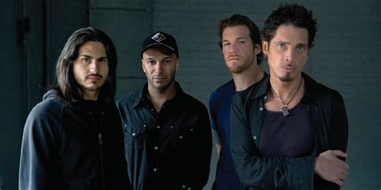

Origin
Audioslave was an American rock supergroup formed in Glendale, California, in 2001. The four-piece band consisted of Soundgarden's lead singer and rhythm guitarist Chris Cornell with Rage Against the Machine members Tom Morello (lead guitar), Tim Commerford (bass/backing vocals), and Brad Wilk (drums). Critics first described Audioslave as a combination of Soundgarden and Rage Against the Machine, but by the band's second album, Out of Exile, it was noted that they had established a separate identity.Their unique sound was created by blending 1970s hard rock and 1990s alternative rock, with musical influences that included 1960s funk, soul and R&B. As with Rage Against the Machine, the band prided themselves on the fact that all sounds on their albums were produced using only guitars, bass, drums, and vocals, with emphasis on Cornell's wide vocal range and Morello's unconventional guitar solos.